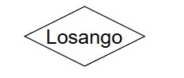

3 Modelagem de Bancos de Dados
3.1 Introdução: Visitando a teoria de Bancos de Dados

Banco de Dados Um banco de dados é uma coleção compartilhada de dados logicamente relacionados, projetada para atender às necessidades informacionais de uma organização. - DATE, C. J. An Introduction to Database Systems. 8. ed. Boston: Addison-Wesley, 2003.
Ou seja, alguns pontos-chave da definição de Date:
“Coleção de dados …” → não é um conjunto de arquivos soltos, mas dados organizados.
“Compartilhada …” → não pertence a apenas um usuário ou aplicação; é usada por vários.
“Dados logicamente relacionados …” → os dados têm um relacionamento semântico, não são apenas agrupamentos arbitrários.
“Projetada para atender necessidades …” → o banco existe para suportar os processos de uma organização (consultas, relatórios, controle, tomada de decisão).

Banco de Dados Relacional Um banco de dados relacional é um banco de dados baseado em um modelo de dados relacional, no qual os dados são representados como um conjunto de relações (tabelas), e cada relação consiste em tuplas (linhas) e atributos (colunas). - SILBERSCHATZ, Abraham; KORTH, Henry F.; SUDARSHAN, S. Database System Concepts. 6. ed. New York: McGraw-Hill, 2010.
Agora, alguns pontos-chave da definição de Abraham Silberschatz :
Base no modelo relacional de Codd (1970).
Dados representados em tabelas (relações).
Cada tabela é composta de tuplas (linhas) e atributos (colunas).
Integridade garantida por restrições (chaves, integridade referencial, domínio de atributos).
Manipulação feita por linguagens relacionais (álgebra relacional, cálculo relacional, SQL).
O Banco de Dados Relacional organiza as informações em tabelas bidiomensionais constituídas de linhas e colunas chamadas e essas tabelas recebem o nome de relações. Cada relação possui um campo-chave que confere identificação exclusiva a cada registro da tabela.
3.2 Modelo Matemático de um Banco de Dados
Considere um Banco de Dados para representar, com consistência Matemática os funcionários e Departamentos de uma Empresa.
3.2.1 Podemos representa-lo matemáticamente utilizando a teoria dos conjuntos
Figure 3.1: Diagrama de Montadoras, Veículos e Proprietários
3.2.2 Então para podemos relacionar estes dois conjuntos (Funcionários e Departamentos) utilizando a Teoria das Funções
$$
f(x) = Y
$$
$$
F(Funcionário) = Departamento
$$

Figure 3.2: Diagrama de Montadoras, Veículos e Proprietários
Mas vai ficar faltando como representar os atributos nesse modelo (colunas das tabelas):
Ainda, é necessário acrescentar algumas regras de integridade a representação;
3.3 Modelo Lógico de Banco de Dados
3.3.1 Modelo Conceitual “Entidade Relacionamento” de Banco de Dados
O Modelo Entidade-Relacionamento (MER), proposto por Peter Chen em 1976, é uma ferramenta fundamental na modelagem de dados. É um modelo de dados de alto nível que descreve a estrutura conceitual de um banco de dados. O Modelo Entidade-Relacionamento (MER) é representado graficamente através de um DER (Diagrama Entidade-Relacionamento).
É utilizado para projetar Bancos de Dados Relacionais a partir de entrevistas onde se descreve as informações que se deseja armazenar de forma consistente. Exemplo:
“Desenhe um diagrama entidade-relacionamento DER contendo as entidades funcionarios e departamentos. A entidade ”funcionários” possui os atributos ”nome” e ”CPF”. A entidade ”Departamentos” possui os atributos ”Nome” e ”sigla”. O atributo ”CPF” é chave primária da entidade ”Funcionários”. O atributo ”sigla” é chave primária da entidade ”Departamentos”. As entidades ”Funcionários” e ”Departamentos” se relacionam através de um relacionamento chamado ”Pertence”.”

Segundo Laudon
Diagrama Entidade/Relacionamento (DER) é uma representação esquemática utilizada para entender as relações entre as tabelas de um banco de dados relacional. [[1] - LAUDON, Kenneth C.; LAUDON, Jane P. *Sistemas de informação gerenciais*. 11. ed. São Paulo: Pearson Education do Brasil, 2010. p. 180.]
3.3.2 Composição e Significado do Diagrama Entidade Relacionamento (DER)
| Nome | Desenho | Significado |
| Entidade |  |
Representa uma tabela e é identificada no texto por um substantivo. |
| Nome | Desenho | Significado |
| Atributo |  |
Representa uma coluna e é identificada no texto por um adjetivo. |
| Nome | Desenho | Significado |
| Relacionamento |  | Representa uma Referência e é identificada no texto por um Verbo. |
3.4 Modelo Físico de Banco de Dados
3.4.1 Geração do modelo Físico para aplica-lo ao SGBD (Sistema de Gerenciamento de Banco de Dados):
Uma vez que o modelo conceitual seja gerado, o analista pode mapea-lo para um “modelo físico” onde se mapeiam chaves primárias e chaves forasteiras nas tabelas.
Após a geração do modelo físico pode-se gerar o SQL que monta a estrutura do Banco de Dados.

3.4.2 Código SQL - Implementação do Modelo Físico
-- Exemplo testado e gerado no SGBD Postgres versão 15
-- Tabela Funcionários
CREATE TABLE IF NOT EXISTS "public".funcionarios
(
cpf bigint NOT NULL,
nome varchar(200)
);
-- Tabela Departamentos
CREATE TABLE IF NOT EXISTS "public".departamentos
(
sigla integer NOT NULL,
nome varchar(200)
);
-- Definindo a coluna "cpf" da tabela "funcionários" como chave primária
alter table "public".funcionarios add constraint "chave_primaria_funcionarios" primary key (cpf);
-- Definindo a coluna "sigla"" da tabela "departamentos" como chave primária
alter table "public".departamentos add constraint "chave_primaria_departamentos" primary key (sigla);
-- Gerando a integridade referêncial
-- Importando a chave primária da tabela "departamentos" como "chave estrangeira"
-- na tabela "funcionários"
-- primeiro adiciona-se a coluna estrageira "sigla" que é coluna originalmente
-- pertencente a tabela departamentos
alter table "public".funcionarios add column sigla integer;
-- finalmente conecte a coluna sigla a chave primária da tabela "departamento"
-- criando então uma chave estrageira na tabela "funcionários".
alter table "public".funcionarios add constraint "Chave_estrangeira_Departamento_funcionarios" foreign key (sigla) references "public".departamentos(sigla);3.5 EXEMPLO: MONTADORA
3.5.1 Modelo Matemático
Construa um Banco de Dados com suporte a consistência das informações. Utilize para isso o modelo Relacional. Precisamos armazenar as informações dos Veículos, Montadoras e Proprietários;


3.6 Normalização em Bancos de Dados Relaionais
3.6.1 Tabela Desnormalizada

Considere a tabela Veículos abaixo:
| Modelo | Montadora |
|---|---|
| Strada | Fiat |
| Mobi | Fiat |
| Pulse | Fiat |
| Onix | Chevrolet |
| Tracker | Chevrolet |
| Onix Plus | Chevrolet |
| Polo | Volkswagen |
| Nivus | Volkswagen |
| T-Cross | Volkswagen |
| HB20 | Hyundai |
| Creta | Hyundai |
Separamos o conjunto de elemntos Montadoras e Modelos.
| MontadoraID | Montadora |
|---|---|
| 1 | Fiat |
| 2 | Chevrolet |
| 3 | Volkswagen |
| 4 | Hyundai |
| ModeloID | Modelo |
|---|---|
| 101 | Strada |
| 102 | Mobi |
| 103 | Pulse |
| 201 | Onix |
| 202 | Tracker |
| 203 | Onix Plus |
| 301 | Polo |
| 302 | Nivus |
| 303 | T-Cross |
| 401 | HB20 |
| 402 | Creta |
O processo de fragmentar agrupamentos complexos de dados e simplifica-los a fim de minimizar redundâncias e economizar espaço no Banco de Dados Relacional é chamado de NORMALIZAÇÃO. [[1] - LAUDON, Kenneth C.; LAUDON, Jane P. *Sistemas de informação gerenciais*. 11. ed. São Paulo: Pearson Education do Brasil, 2010. p. 180.]
Mas Como indicar que cada elemento da tabela “Modelo” está associado a um elemento da tabela “Montadora” ?
3.6.2 Tabela Normalizada
Considere as tabelas abaixo:
| MontadoraID | Montadora |
|---|---|
| 1 | Fiat |
| 2 | Chevrolet |
| 3 | Volkswagen |
| 4 | Hyundai |
| ModeloID | Modelo | MontadoraID |
|---|---|---|
| 101 | Strada | 1 |
| 102 | Mobi | 1 |
| 103 | Pulse | 1 |
| 201 | Onix | 2 |
| 202 | Tracker | 2 |
| 203 | Onix Plus | 2 |
| 301 | Polo | 3 |
| 302 | Nivus | 3 |
| 303 | T-Cross | 3 |
| 401 | HB20 | 4 |
| 402 | Creta | 4 |
Repare que:
É possível identificar que não existem montadoras repetidas na tabela “Montadoras”;
É possível identificar que não existem modelos repetidos na tabela “Montadoras”;
A coluna (atributo) ModeloID é a chave primária da tabela Modelos. A coluna (atributo) MontadoraID é a chave primária da tabela Montadoras.
Na tabela Modelos, a coluna MontadoraID, acrescentada a tabela Modelos representa a ligação de cada elemento da tabela Modelos e Montadoras. Essa coluna “importada” da tabela Montadoras para a tabela Modelos se chama chave estrangeira.
3.7 Exercícios
1- Construa um projeto Banco de Dados Relacional para uma universidade. Mapeie no seu Banco de Dados Disciplinas, Professores e Alunos. Para isso, faça o modelo “matemático”, o Modelo Lógico e o Modelo Físico com SQL.
3.8 Referências
DATE, C. J. An Introduction to Database Systems. 8. ed. Boston: Addison-Wesley, 2003.
SILBERSCHATZ, Abraham; KORTH, Henry F.; SUDARSHAN, S. Database System Concepts. 6. ed. New York: McGraw-Hill, 2010.
CODD, E. F. A Relational Model of Data for Large Shared Data Banks. Communications of the ACM, New York, v. 13, n. 6, p. 377–387, 1970.